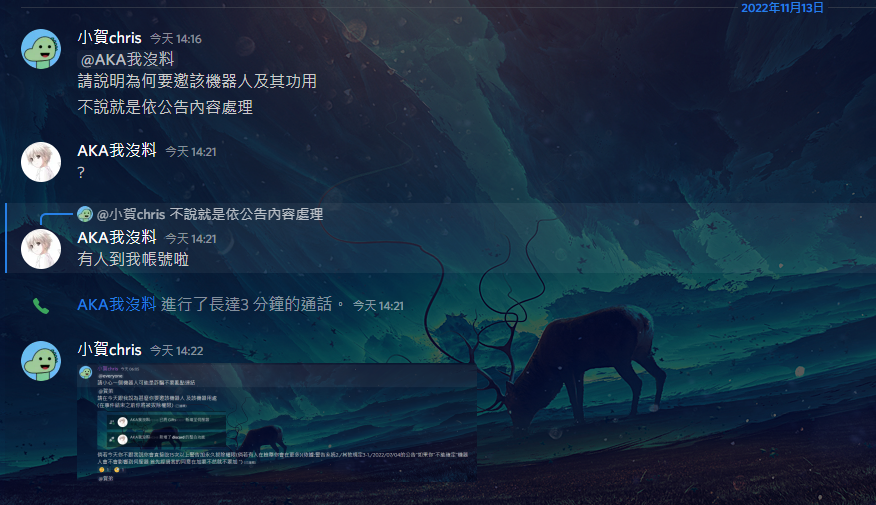

結果:警告10次加拔除權限至2022/12/13
原因:
因使用權限加入機器人影響他人,但非本人所為
通話內容 他說:"我不會加機器人 我是被盜帳號 絕對不是我加的 我那時在睡覺"
規則引用:
警告系統2.如果是重大影響到別人不用投票如:拔別人身分組 辱罵別人 有確切證據直接警告(6)
其他規定3-1.但唯一例外:有人用私人訊息發罐頭郵件(例如:有人發連結給你說這是Nirto等等)(1)
2022/07/04的公告"如果你"不能確定"機器人會不會影響到伺服器首先經過我的同意在加要不然就不要加"(3)
@公家機關->@AKA我沒料#3348